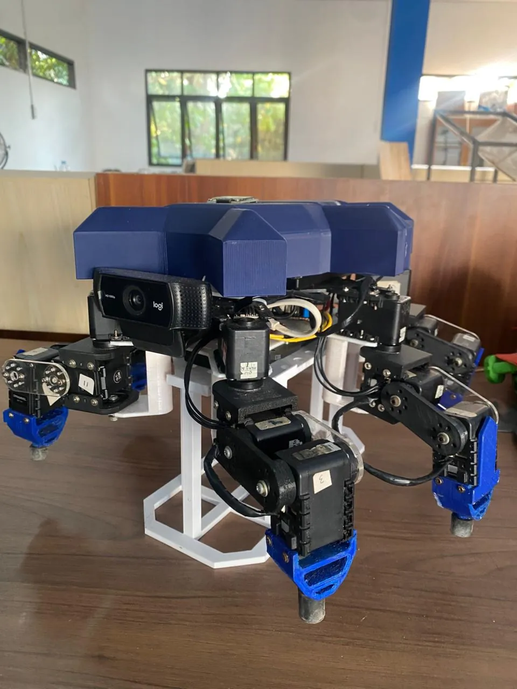

Proyek unggulan
Wasaka Hexapod (Hexaka V3)
Robot berkaki atau Hexapod 18-DOF yang mampu bernavigasi secara otonom pada permukaan tidak datar dengan stabilisasi IMU dinamis.
- Tahun
- 2024 — 2026
- Kategori
- Robotics · Autonomous Navigation
- Teknologi
- Dynamixel 18-DOF, Inverse Kinematics, ROS2, IMU Leveling